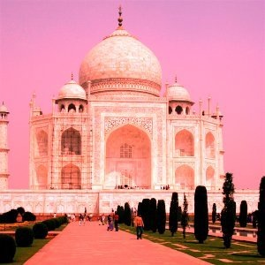
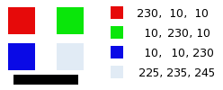

Figure 16.162. Example for the “Channel Mixer” filter

Original image

“Channel Mixer” applied
This command combines values of the RGB channels. It works with images with or without an alpha channel.
- Presets, Blending Options, Preview, Merge filter, Split view
-
![[Note]](images/note.png)
Note These options are described in Section 8.1.2, “Colors Common Features”.
- Red Channel, Green Channel, Blue Channel
-
Each of these has three sliders, which set the contribution of the red, green and blue input channels in the output channel. The sliders go from -2 to 2. They represent the multiplication factor of the input channel that will be attributed to the output channel.
- Preserve luminosity
-
The mixing can result in an image where some of the colors are too light. This option lessens the luminosity of the color channels while keeping a good visual ratio between them. So, you can change the relative weight of the colors without changing the overall luminosity.
Each of the output channels is based on the values you set for the three RGB input channels. By default each output channel is based for 100% on the corresponding input channel. This is the one set to 1.0, and the others are set to 0.0. You can change each of the sliders from -2 to +2.
The three RGB input sliders let you give a percentage to every channel. For every pixel in the image, the sum of the calculated values for every channel from these percentages will be given to the output channel. Here is an example:
Figure 16.164. The original image and its channels

RGB values of the pixels in red, green, blue, gray squares are displayed. The black rectangle is special, because black (0;0;0) is not affected by the command (0 multiplied by any percentage always gives 0). The result can't exceed 255 nor be negative.
Figure 16.165. Output channel is red. Green Channel +50

In the red square, the pixel values are 230;10;10. Relative values are 1;0.5;0. The calculation result is 230*1 + 10*0,5 + 10*0 =235. The same reasoning is valid for the green and the blue squares.
In the gray square, which contains red color, the calculation result is above 255. It is reduced to 255. A negative value would be reduced to 0.
Figure 16.166. Output channel is red. Green Channel +50%. The Preserve Luminosity option is checked.

The values attributed to the Red Output channel are lower, preventing a too bright image.